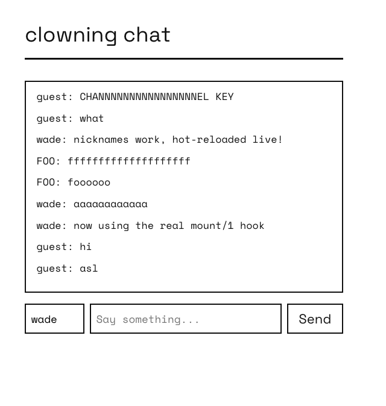

CONCRETE 008: A Live Chat Across Two Nodes

Summary:
Every earlier post in this series covers one mechanism at a time. This one builds something with several of them at once: a chat room that runs live across two distributed Erlang nodes, pushes messages to every open browser with no polling, connects itself the moment the page loads, and gets a new feature added to it – while it keeps running, with real users connected – through nothing but a recompile and a network load. No restart, no lost history.
The full source for this demo is at wmealing/clowning.
The Big Parts
I know it's a bit of an odd name, but I was simply clowning around, hence the clowning prefix.
Three pieces:
clowning_chat, agen_serverholding message history, replicated to every connected node.clowning_chat_page, a Concrete page that connects to a live event stream the moment it loads, and renders every message – past and future – through one code path.- A plain
/chat/postroute for sending, deliberately outside Concrete's own command dispatch.
Open two nodes, each serving the page on its own port, and a message typed into one browser shows
up in the other immediately. Two browser tabs on the same node see it too, obviously, but the
point of running two nodes is that neither one is special: whichever node's clowning_chat a browser happens
to be talking to, the message still gets everywhere.
The Chat History
-module(clowning_chat).
-behaviour(gen_server).
-export([start_link/0, post/2, history/0]).
-export([init/1, handle_call/3, handle_cast/2, handle_info/2, terminate/2, code_change/3]).
-define(MAX_HISTORY, 200).
start_link() ->
gen_server:start_link({local, ?MODULE}, ?MODULE, [], []).
post(Author, Text) ->
gen_server:call(?MODULE, {post, Author, Text}).
history() ->
gen_server:call(?MODULE, history).
init([]) ->
{ok, #{messages => []}}.
handle_call({post, Author, Text}, _From, State) ->
Msg = #{author => Author, text => Text, ts => erlang:system_time(millisecond)},
NewState = append(Msg, State),
gen_server:abcast(nodes(), ?MODULE, {replicate, Msg}),
concrete_pubsub:broadcast(<<"chat_room">>, {message, Msg}),
{reply, ok, NewState};
handle_call(history, _From, #{messages := Messages} = State) ->
{reply, lists:reverse(Messages), State}.
handle_cast({replicate, Msg}, State) ->
{noreply, append(Msg, State)}.
append(Msg, #{messages := Messages} = State) ->
State#{messages := lists:sublist([Msg | Messages], ?MAX_HISTORY)}.
Two things happen on every post, and neither one is Concrete-specific – this is a
plain gen_server doing plain OTP:
gen_server:abcast(nodes(), ?MODULE, {replicate, Msg}) sends the message as a real cast
to every node currently connected to this one, so both nodes' history stays identical no
matter which node a given browser posted to.
concrete_pubsub:broadcast(<<"chat_room">>, {message, Msg}) is a wrapper over Erlang's pg
(process groups): concrete_pubsub:subscribe/2 joins a channel, broadcast/2 sends to every member.
Because pg is cluster-wide the moment two nodes are connected (net_adm:ping/1, same as always), a
browser subscribed on node2 gets a message posted on node1 with no extra plumbing at all. The channel
is a binary, <<"chat_room">>, matching what the URL-based subscriber below joins with – pg channels
are just terms, and two different terms are two different channels even if one prints the same.
What Runs When the Page Loads
Concrete's page behaviour has a mount/1 callback for exactly this – the same idea Phoenix
LiveView's own mount callback covers, though the mechanism underneath is entirely different
(LiveView's runs server-side over a socket; Concrete's runs compiled to JavaScript, in the
browser). The runtime calls it once, client-side only, right after this page's markup is in the
real DOM.
No template wiring needed – it isn't called from .slab the way {@count} reads a state value;
the client runtime calls mount/1 directly, right after the first render, the same way a click
calls action/3.
<div class="chat-page">
<h1>clowning chat</h1>
<div id="messages" class="chat-log"></div>
<div id="composer">
<input id="nick-input" type="text" placeholder="nickname" autocomplete="off" class="chat-nick">
<input id="chat-input" type="text" placeholder="Say something..." autocomplete="off">
<button data-chat-send="1">Send</button>
</div>
</div>
mount/1 takes the whole Component map, not just the message list – it comes in already
wire-decoded, the exact same shape action/3's third argument already is, so matching it out
with #{state := #{messages := History}} reads no differently than an action/3 clause does.
mount/1 runs browser-side only. Unlike render/1, it's never part of building the page's
first HTML on the server, so there's nothing here that needs to guard against running twice:
mount(#{state := #{messages := History}}) ->
lists:foreach(fun(M) -> render_message(M) end, History),
dom:on_keydown(<<"chat-input">>, <<"Enter">>, clowning_chat_page, send_key),
dom:on_click(<<"composer">>, <<"data-chat-send">>, clowning_chat_page, send_click),
sse:connect(<<"/concrete/sse/chat_room">>, clowning_chat_page, on_message).
Three things get wired up here, and none of them run do_send/0 (covered in the next section)
directly – send_key/0 and send_click/1 are the two small functions in between, and they
exist because dom:on_keydown/4 and dom:on_click/4 don't call back with the same arity:
%% dom:on_keydown/4 calls Module:Function/0 -- no arguments.
send_key() ->
do_send().
%% dom:on_click/4 calls Module:Function/1 -- with the clicked element's
%% [data-chat-send] attribute value, unused here and just discarded.
send_click(_Value) ->
do_send().
The sse:connect/3 line is doing the same kind of thing: it opens a stream to the given URL,
and the last two arguments are a module and function to call – on_message/1 below – once
per event, for as long as the tab stays open.
on_message({message, Msg}) ->
render_message(Msg).
render_message(#{author := Author, text := Text}) ->
Html = <<"<div class=\"chat-message\"><span class=\"chat-author\">",
(escape_html(Author))/binary, ":</span> ",
(escape_html(Text))/binary, "</div>">>,
dom:append_html(<<"messages">>, Html),
dom:scroll_to_bottom(<<"messages">>).
escape_html/1 is a small hand-rolled recursive pass over the binary –
worth calling out because it's not binary:replace/4. The client compiler cross-compiles
whatever real Erlang a reachable call resolves to, and binary:replace/4's actual OTP
implementation leans on bit-syntax the client encoder doesn't support yet. A plain recursive
walk over the bytes sidesteps that entirely, and is easier to read:
escape_html(Bin) ->
escape_html(Bin, <<>>).
escape_html(<<>>, Acc) -> Acc;
escape_html(<<38, Rest/binary>>, Acc) -> escape_html(Rest, <<Acc/binary, "&">>);
escape_html(<<60, Rest/binary>>, Acc) -> escape_html(Rest, <<Acc/binary, "<">>);
escape_html(<<62, Rest/binary>>, Acc) -> escape_html(Rest, <<Acc/binary, ">">>);
escape_html(<<34, Rest/binary>>, Acc) -> escape_html(Rest, <<Acc/binary, """>>);
escape_html(<<C, Rest/binary>>, Acc) -> escape_html(Rest, <<Acc/binary, C>>).
Sending, Outside Concrete's Own Dispatch
Every earlier post in this series sends data to the server
with ?js:call(<<"Client">>, dispatchCommand, ...). That's the right tool when the response should feed
back into page state.
It's the wrong tool here: dispatchCommand's response handler always ends in a re-render,
the same rebuild described above, which would wipe the chat log right back to the static
template on every message sent.
So sending goes around it, with http:post_json/2 – a genuine fire-and-forget POST, no
response handling, straight to a small plain cowboy handler instead of
Concrete's /concrete/command route. This is do_send/0, the function send_key/0 and
send_click/1 call:
do_send() ->
Text = dom:get_value(<<"chat-input">>),
Nick = dom:get_value(<<"nick-input">>),
dom:set_value(<<"chat-input">>, <<>>),
http:post_json(<<"/chat/post">>, #{text => Text, author => Nick}).
-module(clowning_chat_post_handler).
-export([init/2]).
init(Req0, State) ->
{ok, Body, Req1} = read_body(Req0),
{ok, Params} = thoas:decode(Body),
#{<<"text">> := Text} = Params,
Author = maps:get(<<"author">>, Params, <<"guest">>),
case string:trim(Text) of
<<>> -> ok;
Trimmed -> clowning_chat:post(Author, Trimmed)
end,
{ok, cowboy_req:reply(204, Req1), State}.
Nothing renders as a direct result of sending. The sender finds out their own message went through the exact same way every other browser does – it comes back over the SSE stream into on_message/1, a moment later. One code path renders every message, always, regardless of who sent it or which node they're talking to.
Hot-Reloading Onto a Running Node
None of this required stopping either node. clowning ships two Makefile targets that start long-lived, named, distributed Erlang nodes:
$ make node1 # web app on http://localhost:4000/
$ make node2 # web app on http://localhost:4001/
Pushing a change onto both of them, once they're already up, is a disposable third
node that connects to both, recompiles nothing itself, and issues a network load –
c:nl/1 – which pushes the freshly
built .beam to every node connected to it, and reloads it there.
$ rebar3 compile
$ erl -pa _build/default/lib/*/ebin \
-name reload@127.0.0.1 -setcookie clowning_cookie -noshell \
-eval "
net_adm:ping('clowning1@127.0.0.1'),
net_adm:ping('clowning2@127.0.0.1'),
io:format(\"~p~n\", [c:nl(clowning_chat_page)]),
init:stop()."
abcast # printed by the io:format/2 call above -- c:nl/1's own return value
It's important to note that gen_server callbacks always dispatch fully-qualified
(Module:Function/Arity), so any process built on one picks up new code on its
very next message, automatically.
A brand-new module, or a brand-new supervised child, needs one extra line the first time
only: supervisor:start_child(clowning_sup, ChildSpec), run once from the same disposable
connection, adds it to the running tree without restarting anything already there.
Adding a Feature, Live
With the chat already running on both nodes, real messages in its history, we're going to add a nickname field.
The field value will persist in the browser's localStorage so it survives a reload, and gets sent along with
every message instead of a hardcoded author.
The template gains one input, next to the ones already there:
<input id="nick-input" type="text" placeholder="nickname" autocomplete="off" class="chat-nick">
mount/1 sets it from storage on connect, and wires Enter to save a new one. Here's the updated page
mount/1 function:
mount(#{state := #{messages := History}}) ->
lists:foreach(fun(M) -> render_message(M) end, History),
dom:set_value(<<"nick-input">>, stored_nick()),
dom:on_keydown(<<"nick-input">>, <<"Enter">>, clowning_chat_page, save_nick),
dom:on_keydown(<<"chat-input">>, <<"Enter">>, clowning_chat_page, send_key),
dom:on_click(<<"composer">>, <<"data-chat-send">>, clowning_chat_page, send_click),
sse:connect(<<"/concrete/sse/chat_room">>, clowning_chat_page, on_message).
And the two related functions mount/1 wires up:
stored_nick() ->
case dom:local_storage_get(<<"chat_nick">>) of
undefined -> <<"guest">>;
Nick -> Nick
end.
save_nick() ->
dom:local_storage_set(<<"chat_nick">>, dom:get_value(<<"nick-input">>)).
do_send/0 reads whatever's currently in that field alongside the message text, and the post handler
takes an author key instead of assuming guest:
do_send() ->
Text = dom:get_value(<<"chat-input">>),
Nick = dom:get_value(<<"nick-input">>),
dom:set_value(<<"chat-input">>, <<>>),
http:post_json(<<"/chat/post">>, #{text => Text, author => Nick}).
That's the entire feature. Save the file, compile it, then load it.
$ rebar3 compile
$ erl -pa _build/default/lib/*/ebin \
-name reload@127.0.0.1 -setcookie clowning_cookie -noshell \
-eval "
net_adm:ping('clowning1@127.0.0.1'),
net_adm:ping('clowning2@127.0.0.1'),
io:format(\"~p~n\", [c:nl(clowning_chat_page)]),
io:format(\"~p~n\", [c:nl(clowning_chat_post_handler)]),
init:stop()."
Reload either open tab and the nickname box is there. Every message already in history, posted minutes earlier, by the old code – is still exactly where it was. Nothing restarted, nothing disconnected, nothing lost. That's the whole pitch of the BEAM's hot code loading in one sentence: the process holding your state and the code defining your behavior are two separate things, and you're always free to swap the second one without touching the first.